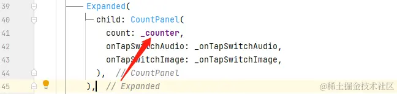

- 01 前言-教程内容导读.md.html
- 02 Flutter 开发环境的搭建.md.html
- 03 新手村基础 Dart 语法 (上).md.html
- 04 新手村基础 Dart 语法 (下).md.html
- 05 Flutter 计数器项目解读.md.html
- 06 猜数字界面交互与需求分析.md.html
- 07 使用组件构建静态界面.md.html
- 08 状态数据与界面更新.md.html
- 09 校验结果与提示信息.md.html
- 10 动画使用与状态周期.md.html
- 11 猜数字整理与总结.md.html
- 12 电子木鱼界面交互与需求分析.md.html
- 13 电子木鱼静态界面构建.md.html
- 14 计数变化与音效播放.md.html
- 15 弹出选项与切换状态.md.html
- 16 用滑动列表展示记录.md.html
- 17 电子木鱼整理与总结.md.html
- 18 白板绘制界面交互与需求分析.md.html
- 19 认识自定义绘制组件.md.html
- 20 通过手势在白板上绘制.md.html
- 21 白板画笔的参数设置.md.html
- 22 撤销功能与画板优化.md.html
- 23 应用界面整合.md.html
- 24 数据的持久化存储.md.html
- 25 网络数据的访问.md.html
- 26 教程总结与展望.md.html
- 捐赠
14 计数变化与音效播放
1. 组件点击事件的监听
计时器项目中的 FloatingActionButton 按钮，猜数字项目中的 IconButton 点击事件，都是通过构造中的 onPressed 参数传入函数，执行相关逻辑。我们称这种以函数对象作为参数的形式为 回调函数 。现在我们的需求是：让图片可以响应点击事件，每次点击时功德数随机增加 1~3 点，并发出敲击的音效。
| ———————————————————— | ———————————————————— |
如下所示，在 MuyuAssetsImage 中使用 GestureDetector 嵌套在 Image 之上，这样图片区域内的点击事件，可以通过 onTap 回调监听到。另外，点击时功德累加的逻辑，和图片构建并没有太大关系，这里通过 onTap 入参，将事件向上级传递，交由使用者处理。
class MuyuAssetsImage extends StatelessWidget {
final String image;
final VoidCallback onTap;
const MuyuAssetsImage({super.key, required this.image, required this.onTap});
@override
Widget build(BuildContext context) {
return Center(
child: GestureDetector( // 使用 GestureDetector 组件监听手势回调
onTap: onTap,
child: Image.asset(
image,
height: 200,
),
),
);
}
}
通过
GestureDetector组件的onTap参数，可以监听到任何组件在其区域内的点击事件。
在 _MuyuPageState#build 方法中，使用 MuyuAssetsImage 组件时，通过 onTap 参数指定逻辑处理函数，这和 FloatingActionButton的onPressed 点击事件本质上是一样的。这里通过 _onKnock 函数处理点击木鱼的逻辑：
---->[_MuyuPageState#build]----
Expanded(
child: MuyuAssetsImage(
image: 'assets/images/muyu.png',
onTap: _onKnock,
),
),
在 _MuyuPageState 中维护界面中需要的状态数据，这里最主要的是功德计数变量，通过 _counter 进行表示。另外，点击时功德数随机增加 1~3 ，需要随机数对象。这样，目前的逻辑就比较清晰了：在 _onKnock 函数中，对 _counter 进行累加即可，每次累加值为 1 + _random.nextInt(3) :
int _counter = 0;
final Random _random = Random();
void _onKnock() {
setState(() {
int addCount = 1 + _random.nextInt(3);
_counter += addCount;
});
}
最后，将 _counter 作为上半界面 CountPanel 的入参即可。这样点击时，更新 _counter 后，会重新构建，从而展示最新的数据。到这里本质上和计数器没有太大的差异：

当前代码位置 muyu
2. 插件的使用和配置
Flutter 是一个跨平台的 UI 框架，而音效的播放是平台的功能。在开发过程中，一般使用 插件 来完成平台功能。得益于 Flutter 良好的生态环境，在 pub 中有丰富的优秀插件和包。这里使用 flame_audio 插件来实现短音效播放的功能：
使用插件，首先要在 pubspec.yaml 的 dependencies 节点下配置依赖，在 pub 中的 installing 页签中，可以看到依赖的版本号：
如下所示，加入依赖后，点击 pub get 获取依赖包：
现在要播放音效，首先需要相关的音频资源，而使用本地资源，需要在 pubspec.yaml 中进行配置：这里准备了三个木鱼点击的音效，放在 audio 文件夹中。
3. 完成点击播放音效功能
点击事件的逻辑处理在 _MuyuPageState 类中，所以播放音效在该类中处理比较方便。插件的使用也比较简单，首先需要加载资源，通过 FlameAudio.createPool 方法创建 AudioPool 对象。在状态类的 initState 方法中使用 _initAudioPool 创建 pool 对象。
其中第一个参数是资源的名称，flame_audio 默认将本地资源放在 assets/audio 中，指定资源时直接写文件名即可。
---->[_MuyuPageState]----
AudioPool? pool;
@override
void initState() {
super.initState();
_initAudioPool();
}
void _initAudioPool() async {
pool = await FlameAudio.createPool(
'muyu_1.mp3',
maxPlayers: 4,
);
}
然后，只需要在 _onKnock 方法在调用 pool 的 start 方法进行播放即可：
void _onKnock() {
pool?.start();
// 略同...
}
到这里，点击木鱼时，就可以听到敲击木鱼的音效，同时功德数也会随机增加 1~3 点。这样就完成了木鱼最基础的功能需求，下面我们将继续优化和拓展，添加一些新的视觉表现和功能。
当前代码位置 muyu
4. 增加功德时的动画展示
如下所示，现在需要在每次点击时展示功德增加的数字，并让数值有动画效果。比如这里是 缩放、移动、透明度 三个动画的叠加，从效果的表现上来说就是文字一边上移，一边缩小、一边透明度降低。
| ———————————————————— | ———————————————————— |
首先来分析一下界面构建：界面上需要展示的信息增加了 当前增加的功德值 ，使用需要增加一个状态数据用于表示。这里使用 _cruValue 变量，该数据维护的时机也很清晰，在点击时更新 _cruValue 的值：
---->[_MuyuPageState]----
int _cruValue = 0;
void _onKnock() {
pool?.start();
setState(() {
_cruValue = 1 + _random.nextInt(3);
_counter += _cruValue;
});
}
这样数据层面就搞定了，下面看一下界面构建逻辑。这里 当前功德 相当于一个浮层，可以通过 Stack 组件和下半部分进行叠放。如下所示，文字从下向上运动到下半部分的顶部：
由于动画的逻辑比较复杂，这里封装 AnimateText 组件来完成动画文字的功能，其中构造函数传入需要展示的文本信息。下半部分通过 Stack 进行叠放，alignment 入参可以控制孩子们的对齐方式，比如这里 Alignment.topCenter ， 将会以上方中心对齐。表现上来说，就是文字在区域的上方中间：
现在数据和布局已经完成，就差动画效果了。在猜数字中我们简单地了解过动画的使用，通过 AnimatedBuilder 组件，监听动画控制器的变化，在构建组件的过程中让某些属性值不断变化。这里介绍一下几个 XXXTransition 动画组件的使用。
先拿 FadeTransition 组件来说，它的构造中需要传入 Animation<double> 的动画器，表示透明度的动画变化。AnimationController 的数值运动是从 0 ~ 1 ，而这里透明度的变化是 1 ~ 0，此时可以使用 Tween 来得到期望的补间动画器。如下 tag1 处，创建了 1~0 变化的动画器 opacity 。在 build 中，使用 FadeTransition 传入 opacity 动画器，当动画控制器运动时，子组件就会产生透明度动画。
| ———————————————————— | ———————————————————— |
class AnimateText extends StatefulWidget {
final String text;
const AnimateText({Key? key, required this.text}) : super(key: key);
@override
State<AnimateText> createState() => _FadTextState();
}
class _FadTextState extends State<AnimateText> with SingleTickerProviderStateMixin {
late AnimationController controller;
late Animation<double> opacity;
@override
void initState() {
super.initState();
controller = AnimationController(vsync: this, duration: const Duration(milliseconds: 500));
opacity = Tween(begin: 1.0, end: 0.0).animate(controller); // tag1
controller.forward();
}
@override
void didUpdateWidget(covariant AnimateText oldWidget) {
super.didUpdateWidget(oldWidget);
controller.forward(from: 0);
}
@override
void dispose() {
controller.dispose();
super.dispose();
}
@override
Widget build(BuildContext context) {
return FadeTransition(
opacity: opacity,
child: Text(widget.text),
);
}
}
当前代码位置 muyu
同理，使用 ScaleTransition 可以实现缩放动画；使用 SlideTransition 可以实现移动动：
@override
Widget build(BuildContext context) {
return ScaleTransition(
scale: scale,
child: SlideTransition(
position: position,
child: FadeTransition(
opacity: opacity,
child: Text(widget.text),
)),
);
}
XXXTransition 组件都需要指定对应类型的 Animation 动画器，而这些动画器可以以 AnimationController 为动力源，通过 Tween 来生成。 缩放变换传入 scale 动画器，从 1 ~ 0.9 变化；移动变化传入 position 动画器，泛型为 Offset，从 Offset(0, 2) ~ Offset.zero 变化，对应的效果就是：在竖直方向上的偏移量，从两倍子组件高度变化到 0 。
| ———————————————————— | ———————————————————— |
class _FadTextState extends State<AnimateText> with SingleTickerProviderStateMixin {
late AnimationController controller;
late Animation<double> opacity;
late Animation<Offset> position;
late Animation<double> scale;
@override
void initState() {
super.initState();
controller = AnimationController(vsync: this, duration: Duration(milliseconds: 500));
opacity = Tween(begin: 1.0, end: 0.0).animate(controller);
scale = Tween(begin: 1.0, end: 0.9).animate(controller);
position = Tween<Offset>(begin: const Offset(0, 2), end: Offset.zero,).animate(controller);
controller.forward();
}
5.本章小结
本章我们学习了如何在自己的项目中使用别人提供的类库，这样就可以很轻松地完成复杂的功能。比如这里点击时的音效播放，如果完全靠自己来写代码实现，将会非常困难。但使用别人提供的插件，几行代码就搞定了。所以说，对于一项技术而言，良好的生态是非常重要的。
你可以使用别人的代码实现功能，方便大家；也可以分享自己的代码以供别人使用，让大家一起完善，这就是开源的价值。到这里，就完成了增加功德数动画的展示效果，当前代码位置 muyu 。下一篇将继续对当前项目进行功能拓展，增加切换音效和木鱼图片的效果。
© 2019 - 2023 Liangliang Lee. Powered by gin and hexo-theme-book.